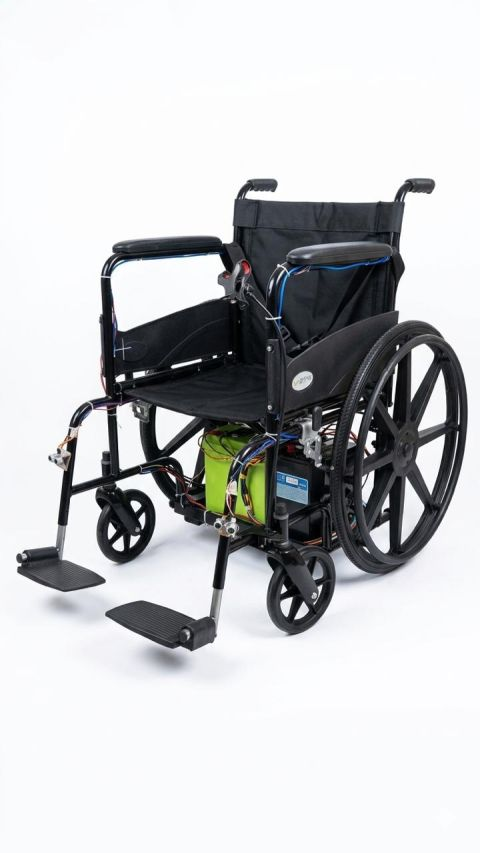

PROJECT GALLERY / 01
Brain Controlled
Smart Wheelchair.
A BCI-enabled mobility concept with eye-blink navigation, GPS connectivity, obstacle awareness, and real-time patient or wheelchair monitoring.

More project images can be added to this gallery as you upload them.